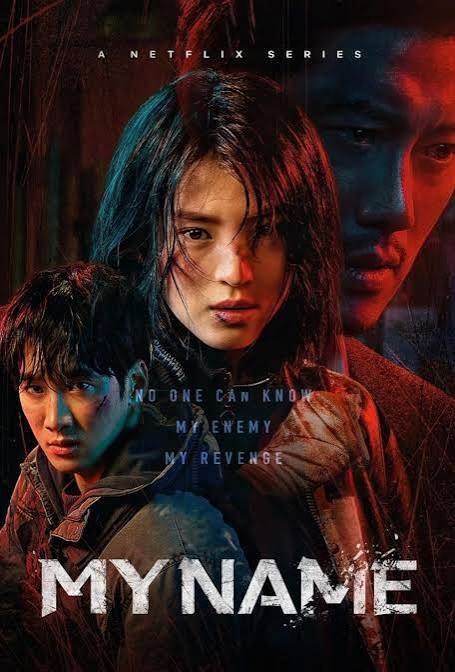
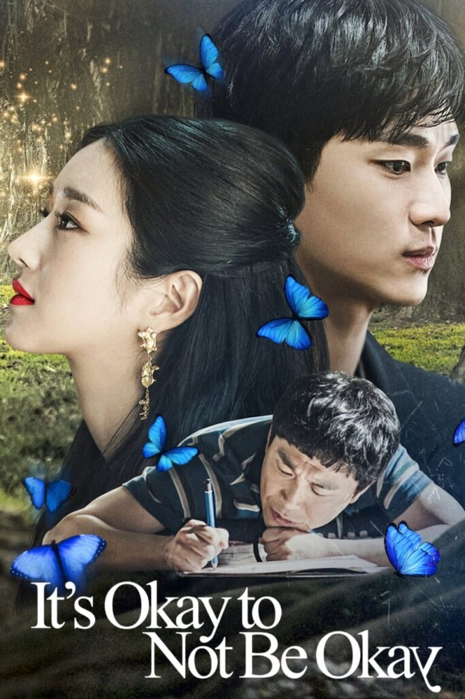

My Name
My Name é uma série sul-coreana, ou dorama, de ação e suspense da Netflix, lançada em 2021. A trama acompanha Yoon Ji-woo, uma jovem consumida pelo desejo de vingança após presenciar o assassinato brutal de seu pai. Para encontrar o culpado, ela se une a um poderoso chefão do crime e se infiltra na força policial como espiã.

Apesar de Tudo, Amor
Apesar de Tudo, Amor acompanha Yoo Na-bi, uma estudante de artes que sofreu uma decepção amorosa, e Park Jae-eon, um colega charmoso que evita namoros sérios. Eles iniciam uma relação intensa, mas sem compromisso, lidando com inseguranças e paixão até decidirem ficar juntos no final.
Tudo Bem Não Ser Normal
Tudo Bem Não Ser Normal acompanha o enfermeiro psiquiátrico Moon Gang-tae, que cuida do irmão autista Moon Sang-tae, e a escritora Ko Moon-young, que tem transtorno antissocial. Juntos, o trio confronta traumas de infância, superando dores emocionais e encontrando cura mútua.
